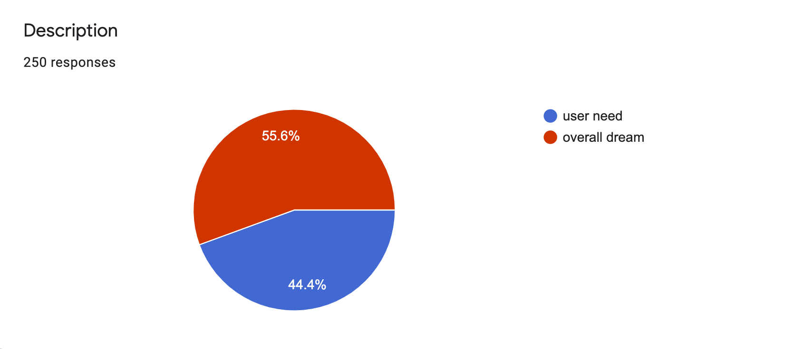
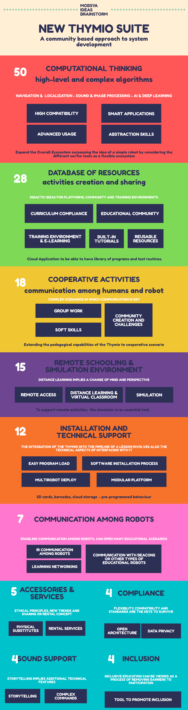

Personas - Needs - Background Information
Scenario Collection
During the first phase o collective 16 Thymio users provided 48 scenarios
Scenario Analysis


| High Compatibility | Flexibility of tools: compatibility with different programming languages (i.e., Python), as well as with different simulated or real robots. Integration with ROS. OO programming |
| Abstraction skills | Make students think about their code BEFORE coding. Use the Thymio load program interface as a tool to help students cultivate abstraction. |
| Smart Applications | Enable dealing with AI, Image Processing challenges and expanding applications (e.g. domotics) or implementation of more high-level and complex algorithms. |
| Advanced usage | Thymio used to teach the basics of robotics in high schools or universities, or for robotics research |
| Curriculum compliance | Provide activities compliant with the official school curricula. Covering the full age spectrum (mapping activities - curriculum). |
| Built-in tutorials | Didactic resources directly integrated in the working environment for a rapid consultation. A big database of resources for teachers, seen as a list of cross-curricular resources, a way to promote better understanding and to facilitate the integration of Thymio into their curriculum. |
| Educational Community | Community for teachers with tools for creating and sharing educational contents. |
| Training environment & e-learning | Training environment for teachers with examples to test and get ideas from. Pedagocial information about the addressed skills and competences for each of the activities. Provide a structured learning experience for students by means of proposed activities (in a software suite or in the cloud). |
| Reusable resources | High level abstraction: opportunity to create libraries of pre-built behaviours for re-use purposes. Databases with ready-made programs/components. Cloud Applications to be able to have library of programs and test routines. |
| Group Work | Team work made easy through collaborative activities and challenges using Thymio (e.g., final-year project with multiple robots) |
| Soft Skills | Learning to collaborate by letting Thymio robots communicate with each other. Co-operation, communication and collaboration can be powerful means to extend the possibilities of pedagogical activities with Thymio. |
| Community creation and challenges | Creating tournament to showcase Thymios projects and promote more events (e.g., R2T2), challenges and tournaments to be compliant with the educational methodology based on projects. Have a European club for exchange of good practices among teachers and remote challenges/International competitions for students. |
| Remote Access | Physical/simulated robots accessible via the internet. |
| Distance learning & Virtual classroom | Use the Thymio for distance learning and in virtual classroom. Homeworking remote access of a robot (students accessing the robot at the teacher’s home or school). |
| Simulation | To support remote activities, the simulator is an essential tool. |
| Easy program load | Simple ways of loading pre-programmed behaviours to the robot. Program Thymio by inserting a SD CARD (physical reprogramming). Thymio reads barcodes enabling specific programs. |
| Software installation process | Support for simple installation procedure. |
| Multirobot deploy | Support to deploy programs simultaneously on more than one robot. |
| Modular platform | Provide a flexible, rich, modular platform with wide sensing/acting abilities. Think to the Thymio not just as a robot, but rather as a remotely controllable object with two motors and several sensors/actuators. |
| IR Communication among robots | Local communication fits well with the autonomy concept of the robots, where one talks and others listen. Enable teaching different aspects of communication, synchronization and transfer of information, also enabling interesting challenges related to protocols (acknowledgement of receipt). |
| Communication with beacons or other types of educational robots | Enabling communication with other devices improves Thymio usability (beacons for self-localisation, other robots for more complex educational scenario). |
| Learning Networking | Enable learning concepts of networking by means of WiFi communication among robots, as well as communication with other devices through some interface module. |
| Physical substitutes | Paper accessories to help understanding (physical substitute of the robot) and be eco-friendly. To overpass physical absence, a physical substitute (e.g.,Polystyrene/Paper Model of Thymio) can help to become familiar with. |
| Rental Services | Rental services might improve diffusion of Thymio. It could encourage schools to rent large numbers of robots and support more interesting educational scenarios (e.g., challenges, collaborative games and activities) |
| Open Architecture | Open architecture allowing anyone to plus his own tools |
| Data privacy | Be champion in data privacy |
| Storytelling | Storytelling where Thymio play roles by providing an easy way to record sounds. |
| Complex Commands | Better sound support for giving complex commands to the robot based on sound. |
| Tool to promote inclusion | Letting the Thymio being a tool to promote inclusion by providing tools for create educational contents following the standard inclusion criteria (e.g., integration with C.A.A. Sw). |
User Stories definition
Who are the other main characters involved?12 responses
WHEN the situation appears?12 responses
WHERE the situation appears?12 responses
How many robots?12 responses